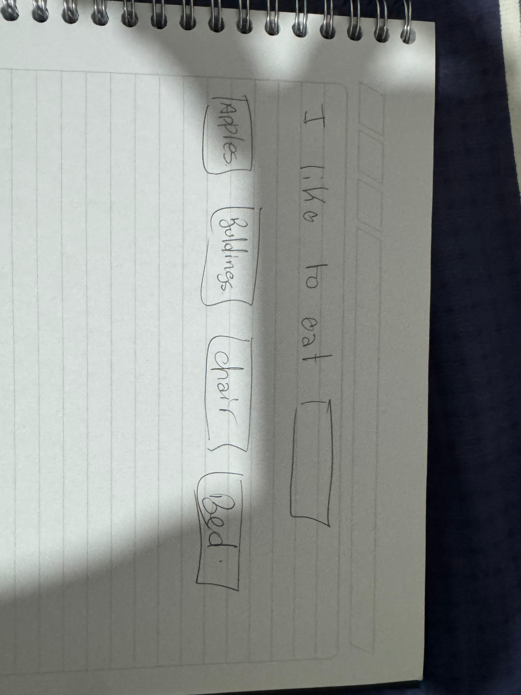
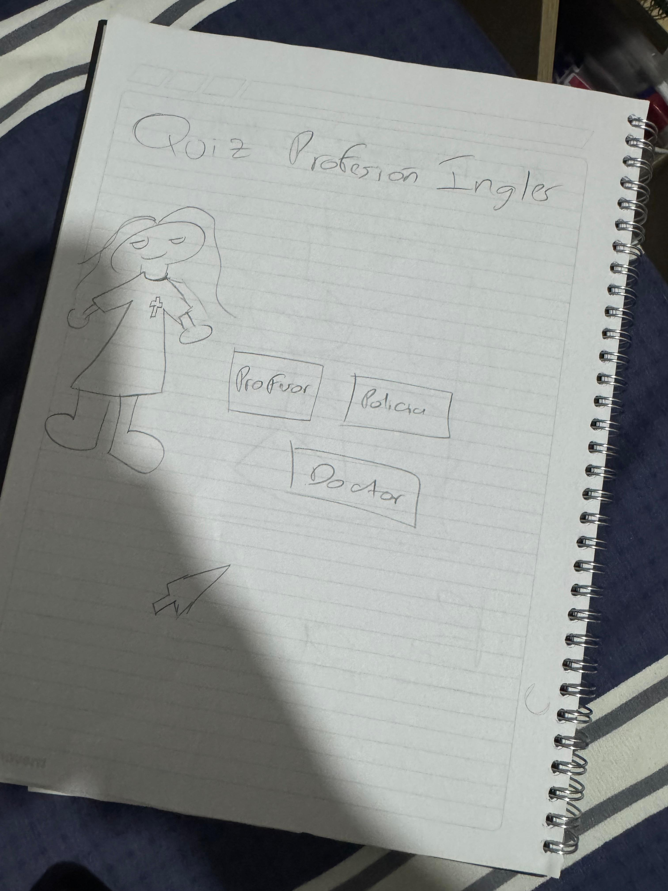
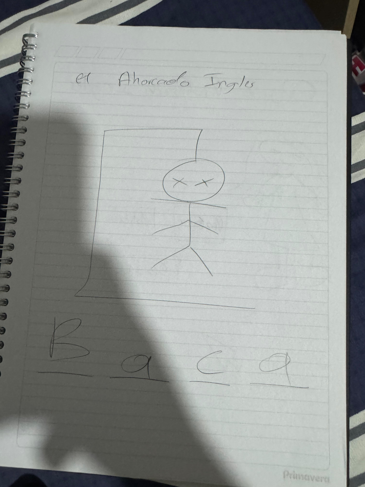
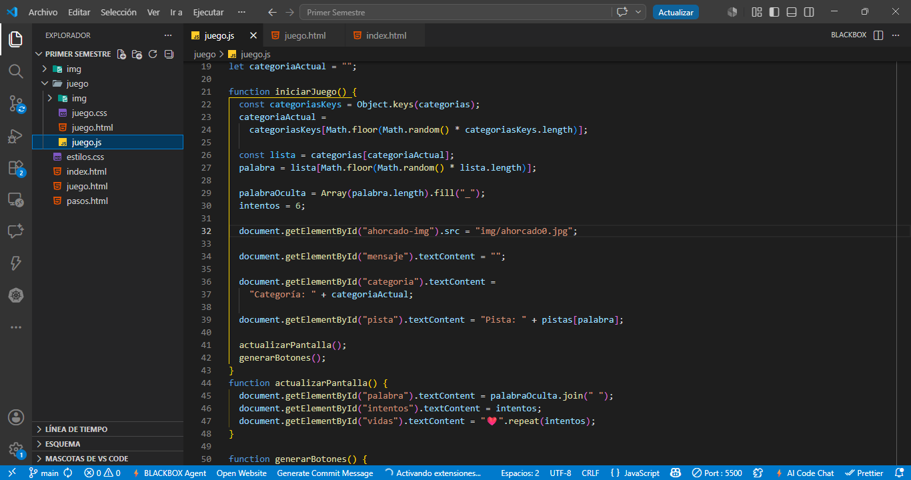
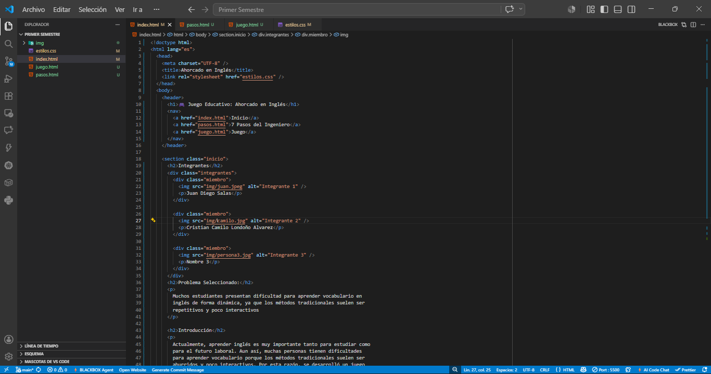

En el siguiente video se presenta una explicación general del proyecto, el problema identificado y la aplicación de los siete pasos del método del ingeniero.
Muchos estudiantes presentan dificultad para aprender vocabulario en inglés de forma dinámica, ya que los métodos tradicionales suelen ser repetitivos y poco interactivos.
Se investigaron métodos de aprendizaje del inglés y juegos educativos. Se encontró que el aprendizaje basado en juegos mejora la retención de información. Se revisaron ejemplos de juegos educativos, como aplicaciones móviles y juegos tradicionales adaptados al aprendizaje. Como ejemplo de aprendizaje basado en juegos, se encontró el juego "Duolingo", que utiliza la gamificación para enseñar idiomas de manera interactiva y efectiva.
Nos reunimos y empezamos a tener una lluvia de ideas de diferentes juegos que se adaptaran a los estudiantes para facilitar el aprendizaje de vocabulario en inglés:
Consistía en una ruleta interactiva donde el usuario debía girar para obtener palabras o preguntas en inglés relacionadas con diferentes categorías. La idea buscaba hacer el aprendizaje más dinámico y aleatorio.
Este juego planteaba preguntas de selección múltiple relacionadas con vocabulario, gramática y traducción en inglés. Su objetivo era evaluar el conocimiento del usuario mediante respuestas correctas e incorrectas.
La propuesta consistía en mostrar palabras incompletas para que el usuario escribiera las letras faltantes. Esto permitiría reforzar el reconocimiento y escritura correcta de palabras en inglés.
El juego consiste en adivinar palabras en inglés, letra por letra, antes de agotar los intentos disponibles. Esta alternativa combina aprendizaje, interacción y entretenimiento, fortaleciendo el vocabulario de manera didáctica.



Se diseñó un juego donde:
- El sistema selecciona una palabra en inglés al azar.
- Se muestra con guiones (_ _ _ _).
- El usuario ingresa letras y tiene 5 o 6 intentos.
- Si falla, pierde una vida.
- Si completa la palabra, gana.
Criterios de selección:
- Fácil de programar.
- Interactivo.
- Refuerza vocabulario.
- Comprensible para cualquier usuario.
- Permite aprendizaje progresivo.
Se seleccionó el juego del ahorcado porque cumple con los criterios de
simplicidad, interactividad y aporte educativo.
| Juego propuesto | Ventajas | Desventajas | Evaluación |
|---|---|---|---|
| Ruleta en inglés | Dinámico y entretenido para el usuario. | Requería mayor complejidad en animaciones y diseño. | Buena idea, pero compleja para el tiempo disponible. |
| Juego de preguntas tipo quiz | Fácil de desarrollar y educativo. | Poco interactivo y repetitivo. | No generaba suficiente dinamismo. |
| Juego de completación de palabra oculta | Ayuda al aprendizaje de vocabulario. | Menor interacción visual y jugabilidad limitada. | Interesante, pero menos entretenido para el usuario. |
| Juego del ahorcado | Interactivo, dinámico y fácil de comprender. Refuerza el vocabulario en inglés de manera entretenida. | Requiere lógica de programación y control de intentos. | Fue la mejor solución seleccionada. |
El sistema desarrollado corresponde a un juego educativo tipo “ahorcado”, enfocado en el aprendizaje de vocabulario en inglés. El programa permite la interacción del usuario mediante el ingreso de letras, validando cada intento y mostrando el progreso de la palabra hasta completarla o perder el juego.
Código del juego:

Desarrollo de la página web:

El sistema permite al usuario ingresar letras, valida cada intento y
muestra el progreso hasta completar la palabra o perder.
- Se probó el funcionamiento.
- Se corrigieron errores.
- Se verificó que cumpla el objetivo educativo.
A continuación, se muestra un video demostrando el funcionamiento del juego, la interacción del usuario y las principales características implementadas.